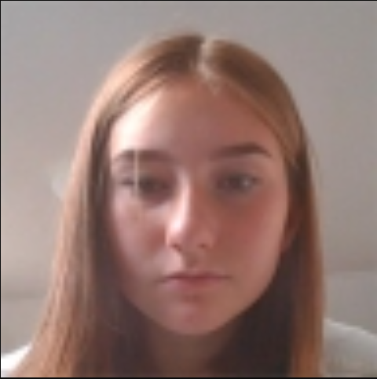

Jag har försökt få er pojkar att dokumentera exakt vad ni gör i ett word-dockument! Detta är ju väldigt praktiskt eftersom att ni kan se exakt vad ni har gjort. Ni gör ju aldrig detta, ni tycker att detta är dumt och onödigt!! Men Agnes gjorde detta nämligen, (jag fantiserar ofta om hur hon fastnar i tvättmaskinen!) hon dokumenterade exakt vad hon hade gjort och sen n-när hon glömde hur hon gjorde något så sa hon "nämen jag kollar i mina antekningar!" 
Jag har berättat denna historia 10 gånger!